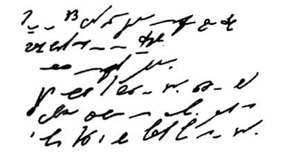

Стенография — это один из способов кодирования текстовой информации с помощью специальных знаков. Она представляет собой быстрый способ записи устной речи. Навыками стенографии могут владеть далеко не все, а лишь немногие специально обученные люди, которых называют стенографистами. Эти люди успевают записывать текст синхронно с речью выступающего человека, что, на наш взгляд, достаточно сложно. Однако для них это не проблема, поскольку в стенограмме целое слово или сочетание букв могут обозначаться одним знаком. Скорость стенографического письма превосходит скорость обычного в 4−7 раз. Расшифровать (декодировать) стенограмму может только сам стенографист.
На рисунке представлен пример стенографии, в которой написано следущее: «Говорить умеют все люди на свете. Даже у самых примитивных племен есть речь. Язык — это нечто всеобщее и самое человеческое, что есть на свете»:
Стенография позволяет не только вести синхронную запись устной речи, но и рационализировать технику письма.
Приведёнными примерами мы проиллюстрировали важное правило: для кодирования одной и той же информации можно использовать разные способы, при этом их выбор будет зависеть от цели кодирования, условий и имеющихся средств.
Если нам нужно записать текст в темпе речи, сделаем это с помощью стенографии; если нужно передать текст за границу, воспользуемся латинским алфавитом; если необходимо представить текст в виде, понятном для грамотного русского человека, запишем его по всем правилам грамматики русского языка. Также немаловажен выбор способа кодирования информации, который, в свою очередь, может быть связан с предполагаемым способом её обработки.
Рассмотрим пример представления чисел количественной информации. Используя буквы русского алфавита, можно записать число «тридцать пять». Используя же алфавит арабской десятичной системы счисления, запишем: 35. Допустим нам необходимо произвести вычисления. Естественно, что для выполнения расчётов мы выберем удобную для нас запись числа арабскими цифрами, хотя можно примеры описывать и словами, но это будет довольно громоздко и не практично.
Заметим, что приведенные выше записи одного и того же числа используют разные языки: первая — естественный русский язык, вторая — формальный язык математики, не имеющий национальной принадлежности. Переход от представления на естественном языке к представлению на формальном языке можно также рассматривать как кодирование.